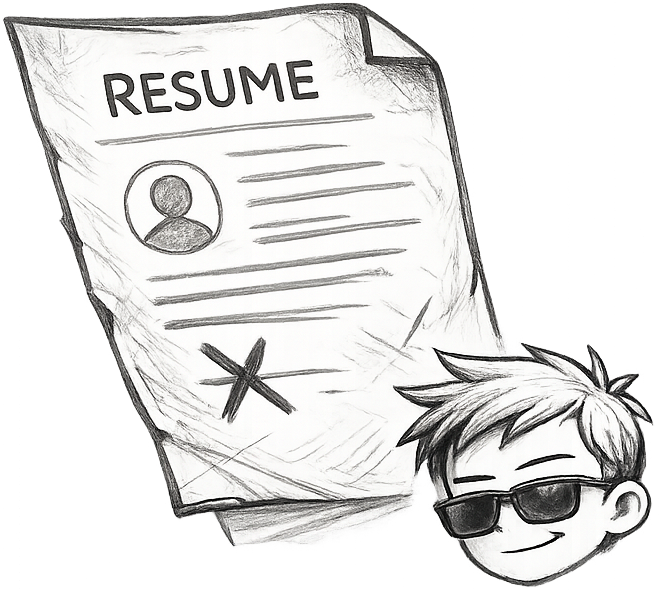
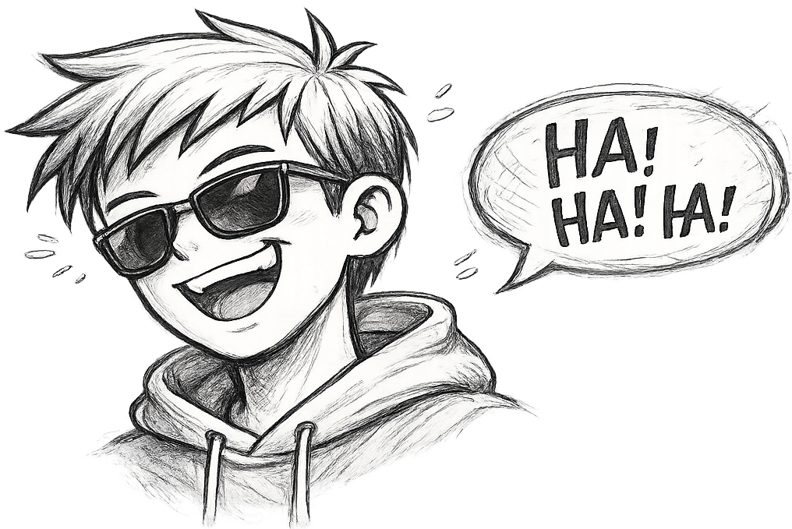
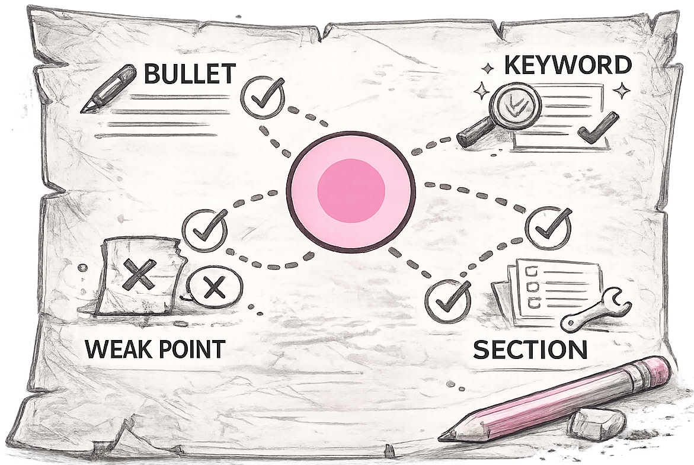
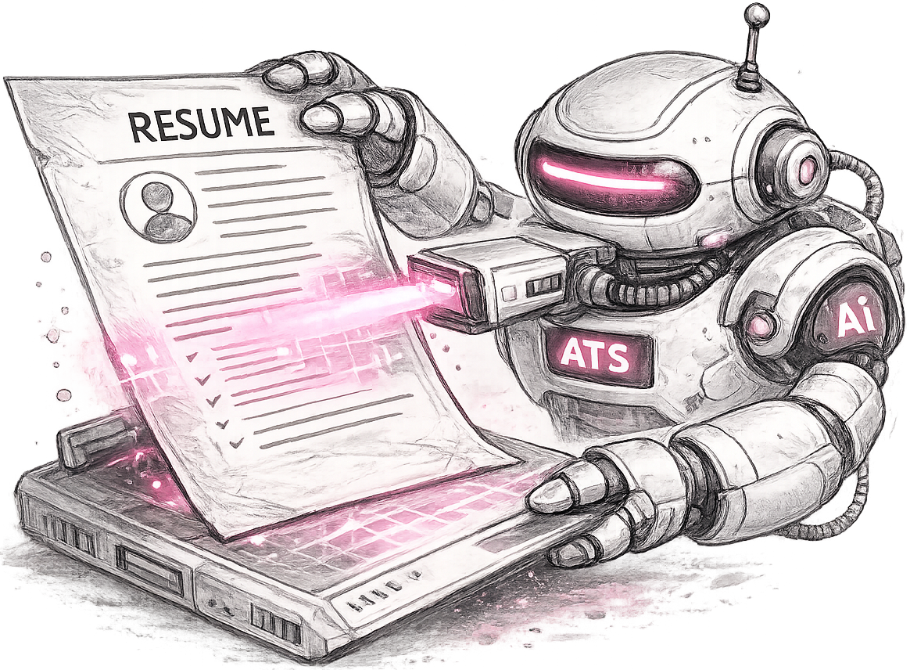

Resume Upload
Drop in your resume or CV and let the tool read the structure, bullets, and proof.
Upload your resume or CV, paste the job description, and get a blunt AI roast that shows why you are getting skipped and what to fix.
Check whether your resume can be parsed, searched, and ranked against the job before you apply.
Missing role keywords and weak sections detected
Understands your CV, projects, skills, and the JD you are targeting before it gives feedback.
Calls out vague bullets, missing proof, keyword gaps, and sections a recruiter would skip.
Turns the roast into clear edits so you know what matters before the next application.
"I thought my resume was fine. The roast showed I was listing work, not proving I was a fit for the job."
Riya, final-year student
Turn coursework, internships, and projects into bullets that prove skill instead of just naming it.
Compare your resume with each JD and stop sending the same version to every role.
Translate past work into role language so recruiters can understand the move quickly.

Drop in your resume or CV and let the tool read the structure, bullets, and proof.
Paste the job description and see what the role is really asking for.

Get blunt feedback on what sounds weak, generic, or irrelevant.

Know which bullets, keywords, and sections to fix before applying.

Catch parsing issues, keyword gaps, and formatting risks before upload.
"I stopped changing random words and started fixing the exact gaps between my resume and the JD."
Rahul, software job seeker